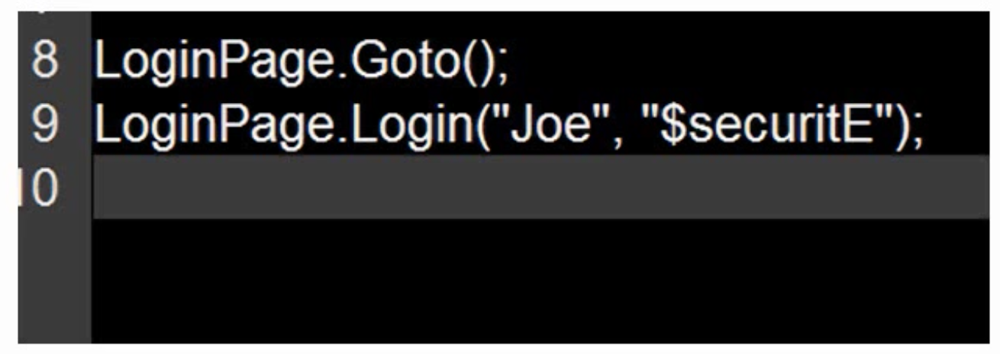

Creating an Automated Testing Framework With Selenium
The System Under Test (SUT)We will be writing a framework to test the Wordpress blogging engine’s backend.
Grab the general structure of your application (web app); this will form the structure of your framework.
Architecture
- Each layer only interacts with the layer immediately below it.
The Page Pattern
- Pages are a good way to model the functionality of an application.
- The methods on a page class should correspond to the actual actions a user can do on a page.
- Pages don’t have to map a whole page.
Page Example
- Think of the actual functionality that a user would use.
- Don’t just model each one of the web element. (Don’t add EVERY little element on the page!)
- If a particular action requires several steps, then combine them together into one single action.
Thinking About Layers
- The framework itself should be divided up by layers of functionality
- Workflow → create a new customer
- Actions that would typically span out to several pages
- Pages → Those pages are going to define the functionality of a single page
- Navigation → Navigation elements of a page
- UI Utilities → Common UI controls that you can abstract into utilities that can be used int he workflow or other pages
Thinking About Ease of Use
Frameworks should be easy and simple to use.
Static Methods
- We are valuing ease of use over maintenance for the framework itself.
- Static methods are okay to use
Internal DSLs
Still using the programming language our framework is, but writing the code in a way specific to our domain.

External DSLs
You can create a whole new language to write your tests in, but that is uite a bit of work.
Running Tests
Consider up front how to run the tests and get output from the tests.